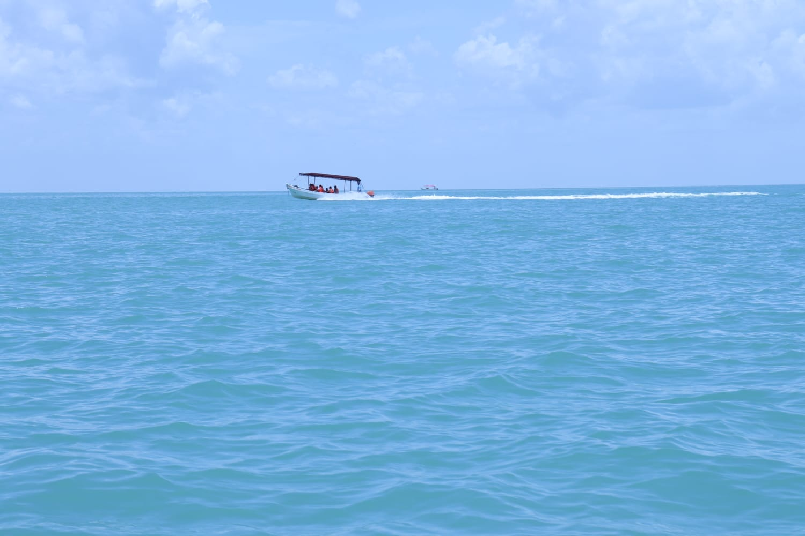
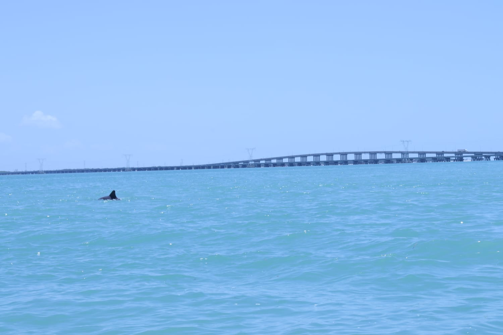
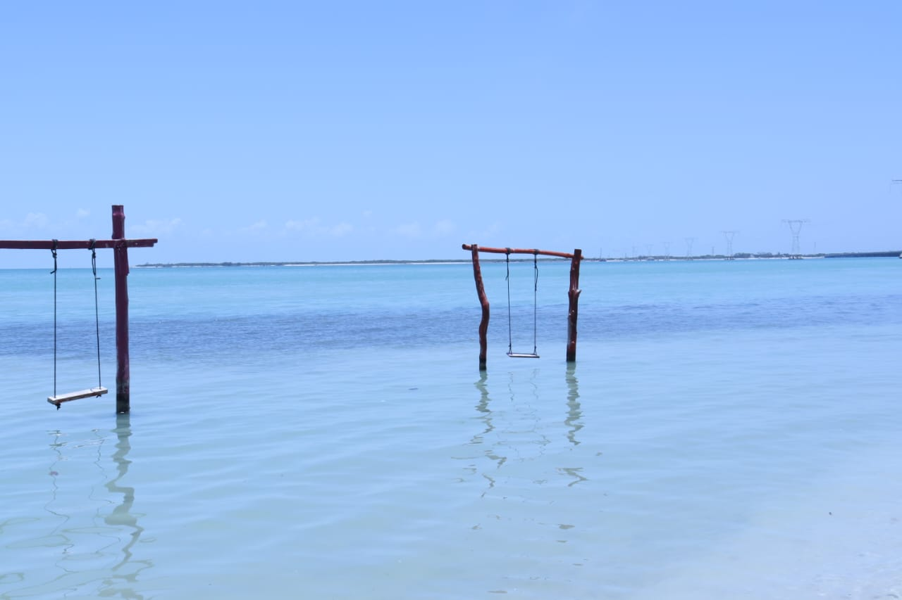

Concepto Visual
Esta serie se centra en la captura de horizontes amplios y la interacción de la luz natural con el agua. A través de la fotografía de paisaje, busco transmitir la serenidad del entorno costero de Campeche, aplicando reglas de composición como el punto de fuga y la ley del horizonte.




